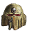
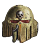

| No | NAME | M | WS | BS | S | T | W! | A | Ld | Sv | Base |
490 Mortarion (base: 100mm) |
|||||||||||
| 1 | 490 Mortarion |
12" | 2+ | 2+ | 8 | 8 | 10-18 | 7 | 10 | 3+ | 100mm |
| 10" | 2+ | 2+ | 8 | 8 | 6-9 | 6 | 10 | 3+ | |||
| 8" | 2+ | 2+ | 8 | 8 | 1-5 | 5 | 10 | 3+ | |||
WEAPON | RANGE | TYPE | S | AP | D | ABILITIES |
| The Lantern | ||||||
| The Lantern | 12" | Pistol 1 | 8 | -3 | 3 | Each time an attack is made with this weapon, if a hit is scored, draw a straight line between the closest point of this model’s base (or hull) and that of the closest model in the target unit. Make one wound roll against the target unit, and each other unit this line passes over. |
| Each time an attack is made with this weapon, if a hit is scored, draw a straight line between the closest point of this model’s base (or hull) and that of the closest model in the target unit. Make one wound roll against the target unit, and each other unit this line passes over. | ||||||
| Attendants’ claws and teeth | ||||||
| Attendants’ claws and teeth | Melee | Melee | 2 | 0 | 1 | Plague Weapon. Each time the bearer fights, it makes D6 additional attacks with this weapon. |
| Plague Weapon. Each time the bearer fights, it makes D6 additional attacks with this weapon. | ||||||
Silence | ||||||
Each time an attack is made with this weapon, select one of the profiles below to make that attack with. | ||||||
Silence | Each time an attack is made with this weapon, select one of the profiles below to make that attack with. | |||||
| - Eviscerating blow | ||||||
| - Eviscerating blow | Melee | Melee | x2 | -4 | D3+3 | Plague Weapon |
| Plague Weapon | ||||||
| - Reaping scythe | ||||||
| - Reaping scythe | Melee | Melee | User | -2 | 1 | Plague Weapon. Each time an attack is made with this weapon profile, make 3 hit rolls instead of 1. |
| Plague Weapon. Each time an attack is made with this weapon profile, make 3 hit rolls instead of 1. | ||||||
| Phosphex bombs | ||||||
| Phosphex bombs | 6" | Grenade 2D6 | 5 | -1 | 1 | Blast |
| Blast | ||||||
ABILITIES | |
ABILITIES |
Contagions of Nurgle, Disgustingly Resilient Primarch of the Death Guard: In your Command phase, select one friendly DEATH GUARD CORE or DEATH GUARD CHARACTER unit within 6" of this model. Until the start of your next Command phase, each time a model in that unit makes an attack, you can re-roll the hit roll. Lord of the Death Guard (Aura): While a friendly DEATH GUARD CORE unit is within 6" of this model, each time a model in that unit makes an attack, re-roll a hit roll of 1. Daemon Primarch: If your army is Battle-forged, this model must be your army’s WARLORD. If more than one model in your army has a rule to this effect, then one of those models must be your army’s WARLORD. The Barbaran Plate: This model has a 4+ invulnerable save. Host of Plagues: At the start of the first battle round, select one of the following Plague Companies’ Warlord Traits: Shamblerot, Ferric Blight; Gloaming Bloat; Eater Plague; Sanguous Flux; The Droning; Nurgle’s Fruit. You cannot select a Warlord Trait that another model in your army already has. Until the end of the battle, this model gains the selected Warlord Trait in addition to any others it has, even if it is not your WARLORD. Putrid Explosion: When this model is destroyed, roll one D6 before removing it from play. On a 4+ it explodes, and each unit (excluding NURGLE units) within 6" suffers D3 mortal wounds. Toxic Presence: This model counts the battle round number as being 4 for the purposes of determining the Contagion range of the Contagion abilities it has. |
PSYKER | |
PSYKER |
This model can attempt to manifest two psychic powers in your Psychic phase and attempt to deny three psychic power in your opponent’s Psychic phase. It knows Smite and three psychic powers from the Contagion discipline. |
WARLORD TRAIT! | |
WARLORD TRAIT! |
Arch-contaminator (Aura): While a friendly <PLAGUE COMPANY> CORE unit is within 6" of this WARLORD: • Each time a model in that unit makes a melee attack with a plague weapon, you can re-roll the wound roll. • Each time a model in that unit makes a ranged attack with a plague weapon that targets a unit within 12", you can re-roll the wound roll. Living Plague (Aura): While an enemy unit is within 3" of this WARLORD, that unit cannot be affected by the aura abilities (excluding those that are psychic powers) of units from your opponents army. Revoltingly Resilient: Each time this WARLORD would lose a wound, roll one D6: on a 5+, that wound is not lost. |
| FACTION KEYWORDS: CHAOS, NURGLE, HERETIC ASTARTES, DEATH GUARD | |
| KEYWORDS: MONSTER, CHARACTER, PSYKER, FLY, SUPREME COMMANDER, DAEMON, BUBONIC ASTARTES, PRIMARCH, MORTARION | |
Datasheet-related Stratagems
This warp-plague spreads fingers of corrosion through armour, flesh, bone and even air with equal virulence.
Those fighting the Death Guard soon became carriers of disease, even if the plagues do not kill them outright. On occasion their plague boils up inside them, so that when they are struck down, they burst.
The slain warrior bursts like a fat, pox-laden buboe.
This datasheet has Lords of War Battlefield Role. Full list of Death Guard units sharing same Battlefield Role follows:
The MORTARION keyword is used in the following Death Guard datasheets:
| ||||||||||||||
If the result of the wound roll is less than the required number, the attack fails and the attack sequence ends. An unmodified wound roll of 6 always successfully wounds the target, and an unmodified wound roll of 1 always fails. A wound roll can never be modified by more than -1 or +1. This means that if, after all the cumulative modifiers to a wound roll have been calculated, the total modifier would be -2 or worse, it is changed to be -1. Similarly, if, after all the cumulative modifiers to a wound roll have been calculated, the total modifier would be +2 or better, it is changed to be +1.
A model can make attacks with a Pistol even when its unit is within Engagement Range of enemy units, but it must target an enemy unit that is within Engagement Range of its own unit when it does so. In such circumstances, the model can target an enemy unit even if other friendly units are within Engagement Range of the same enemy unit.
When a model equipped with both a Pistol and another type of ranged weapon (e.g. a Pistol and a Rapid Fire weapon) shoots, it can either shoot with its Pistol(s) or with its other ranged weapons. Choose which it will fire (Pistols or non-Pistols) before selecting targets.
- Can be shot even if firing model’s unit is within Engagement Range of enemy unit.
- Cannot be shot alongside any other type of weapon.
Revolting toxins and infectious slime weeps from this weapon in a ceaseless stream. Even shallow cuts or glancing blows will leave the enemy’s flesh seething with incurable diseases.
Each time an attack is made with this weapon, re-roll a wound roll of 1.
|
If a model has more than one melee weapon, select which it will use before resolving any attacks. If a model has more than one melee weapon and can make several attacks, it can split them between these weapons however you wish – declare which attacks are being made with which weapons before any attacks are resolved. If the selected weapon has more than one profile that you must choose between, you must declare which profile is being used at the same time. Different attacks made with such a weapon can be made using different profiles if you wish.
If your unit is making attacks with more than one melee weapon against a unit, and those weapons have different characteristics profiles, then after you have resolved an attack with one of those weapons you must, if any other weapons with the same characteristics profile are also being used to make attacks against that unit, resolve those attacks before resolving any attacks against the target with a weapon that has a different characteristics profile. Note that all the attacks you have declared are always resolved against the target unit even if, when you come to resolve an individual attack, no models in the target unit remain in range (this can happen because of models being destroyed and removed from the battlefield as the result of resolving other attacks made by the attacking model’s unit first).
- Each close combat attack is made with a melee weapon.
- A model makes attacks using the close combat weapon profile if it has no other melee weapons.
- If a unit attacks with multiple weapons, all attacks made with weapons that have the same profile must be resolved before resolving attacks with the next.
Silence used in the following datasheets:
Revolting toxins and infectious slime weeps from this weapon in a ceaseless stream. Even shallow cuts or glancing blows will leave the enemy’s flesh seething with incurable diseases.
Each time an attack is made with this weapon, re-roll a wound roll of 1.Revolting toxins and infectious slime weeps from this weapon in a ceaseless stream. Even shallow cuts or glancing blows will leave the enemy’s flesh seething with incurable diseases.
Each time an attack is made with this weapon, re-roll a wound roll of 1.If an attack is made with a weapon that has an ability that says it ‘automatically hits the target’, no hit roll is made – that attack simply scores one hit on the target unit. An unmodified hit roll of 6 always scores a hit, and an unmodified hit roll of 1 always fails. A hit roll can never be modified by more than -1 or +1. This means that if, after all the cumulative modifiers to a hit roll have been calculated, the total modifier would be -2 or worse, it is changed to be -1. Similarly, if, after all the cumulative modifiers to a hit roll have been calculated, the total modifier would be +2 or better, it is changed to be +1.
- If a Blast weapon targets a unit that has between 6 and 10 models, it always makes a minimum of 3 attacks. So if, when determining how many attacks are made with that weapon, the dice rolled results in less than 3 attacks being made, make 3 attacks instead. For example, if a Grenade D6 weapon with the Blast rule targets a unit that has 6 or more models, and you roll a 2 to determine how many attacks are made, that roll is counted as being a 3 and that weapon makes three attacks against that unit.
- When a Blast weapon targets a unit that has 11 or more models, do not roll dice to randomly determine how many attacks are made – instead, make the maximum possible number of attacks. For example, if a Grenade D6 weapon with the Blast rule targets a unit that has 11 or more models, that weapon makes six attacks against that unit.
- Blast Weapons: Minimum three attacks against units with 6+ models. Always make maximum number of attacks against units with 11+ models.
- Can never be used to attack units within the firing unit’s Engagement Range.
When a unit shoots, one model that is equipped with a Grenade in that unit can resolve attacks with it instead of shooting any other weapons.
- Only one model can use a Grenade when its unit shoots.
The Death Guard are carriers of countless infections and contagions, each a gift from Nurgle. Whenever they march to war, these diseases spread, contaminating all around, sapping the strength of its victims, draining them of energy, withering their muscles and overwhelming their immune system. Such is its malefic nature, they can even undo metallic bonds, alien psychic materials and all manner of other elements and components, rendering even armoured vehicles vulnerable.
If every unit from your army has the DEATH GUARD keyword (excluding UNALIGNED units), this unit gains the following ability:Nurgle’s Gift (Contagion): While an enemy unit is within Contagion Range of this unit (see below), subtract 1 from the Toughness characteristic of models in that enemy unit.
Contagion Abilities
Contagion abilities affect enemy models or units within Contagion Range - this changes with the battle round number, increasing as the battle progresses, as shown in the table below. The effects of multiple, identically named Contagion abilities is not cumulative (i.e. if an enemy unit is within range of two models with the same Contagion ability, that Contagion ability only applies to the enemy unit once). Note, that while similar in many regards to Aura abilities, Contagion abilities are not affected by abilities that affect Aura abilities, and vice-versa.
|
Those favoured by Nurgle are inured to pain, their rotting bodies shrugging off all but the most traumatic damage with ease.
Each time an attack is allocated to a model in this unit, subtract 1 from the Damage characteristic of that attack (to a minimum of 1).The DEATH GUARD and CORE keywords are used in the following Death Guard datasheets:
The DEATH GUARD and CHARACTER keywords are used in the following Death Guard datasheets:
- Invulnerable save: Saving throw that is never modified by attacking weapon’s AP.
- A model with an invulnerable save can use it instead of its normal Sv.
If an attack inflicts mortal wounds in addition to the normal damage, resolve the normal damage first. If an attack inflicts mortal wounds in addition to the normal damage, but the normal damage is subsequently saved, the target unit still suffers the mortal wounds, as described before. If an ability modifies the damage inflicted by a weapon, and that weapon can inflict mortal wounds in addition to the normal damage, the modifier does not apply to any mortal wounds that are inflicted (unless the rule specifically states otherwise).
- Each mortal wound inflicted on a unit causes one model in the unit to lose one wound.
- No saving throws can be made against mortal wounds.
- Mortal wounds inflicted by attacks in addition to normal damage always apply, even if normal damage saved.
To manifest the psychic power, you must first pass a Psychic test. The opposing player can then select one of their PSYKER units that is within 24" of the PSYKER unit attempting to manifest the power and attempt to deny that power before its effects are resolved by passing a Deny the Witch test.
So long as the Psychic test was successful and the psychic power was not denied by a successful Deny the Witch test, the psychic power is successfully manifested and its effects, which will be described in the power itself, are then resolved. If the PSYKER unit can attempt to manifest more than one psychic power in its Psychic phase, you can then attempt to manifest those, one at a time, as described above. The number of psychic powers each PSYKER unit can attempt to manifest in its Psychic phase is listed on its datasheet.
- Select psychic power.
- You cannot select the same psychic power more than once per battle round, unless that power is Smite.
- Attempt to manifest the psychic power by taking a Psychic test.
- The opponent can attempt to deny the psychic power by taking a Deny the Witch test.
- If successfully manifested, resolve the psychic power’s effects.
- Select another psychic power.
- Deny the Witch: Passed if 2D6 exceeds result of the opposing PSYKER’s Psychic test.
- Only one attempt can be made to deny each psychic power.
- Warp Charge 5: A Psychic test of 5+ is required to manifest Smite.
- Warp charge increases by 1 for each other attempt to manifest Smite made in this phase.
- If manifested, closest visible enemy unit in 18" suffers D3 mortal wounds.
- If manifested with a Psychic test result of 11+, enemy instead suffers D6 mortal wounds.
The <PLAGUE COMPANY> and CORE keywords are used in the following Death Guard datasheets:
Revolting toxins and infectious slime weeps from this weapon in a ceaseless stream. Even shallow cuts or glancing blows will leave the enemy’s flesh seething with incurable diseases.
Each time an attack is made with this weapon, re-roll a wound roll of 1.The CHAOS keyword is used in the following Death Guard datasheets:
The NURGLE keyword is used in the following Death Guard datasheets:
The HERETIC ASTARTES keyword is used in the following Death Guard datasheets:
The DEATH GUARD keyword is used in the following Death Guard datasheets:
The MONSTER keyword is used in the following Death Guard datasheets:
The CHARACTER keyword is used in the following Death Guard datasheets:
The PSYKER keyword is used in the following Death Guard datasheets:
The FLY keyword is used in the following Death Guard datasheets:
The DAEMON keyword is used in the following Death Guard datasheets:
The BUBONIC ASTARTES keyword is used in the following Death Guard datasheets:
Revolting toxins and infectious slime weeps from this weapon in a ceaseless stream. Even shallow cuts or glancing blows will leave the enemy’s flesh seething with incurable diseases.
Each time an attack is made with this weapon, re-roll a wound roll of 1.